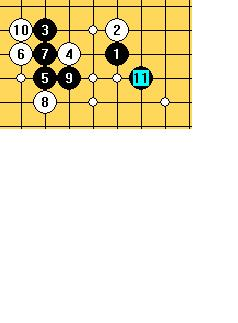

大残月一问
首页
妖刀天下
#1 Re:大残月一问 作者：wrwak 发表时间：2008-10-1 17:37:32
选择4右下方 黑必胜 4正下方白棋有防
我问一下白4选择 1正左方 黑棋一打在哪里 必胜否
#2 Re:大残月一问 作者：wrwak 发表时间：2008-10-1 18:42:18
我个人研究 可以杀
看11手
再问下 图3A点是否必胜
#3 Re:大残月一问 作者：wrwak 发表时间：2008-10-1 18:42:44
图 ...................
#4 Re:大残月一问 作者：wrwak 发表时间：2008-10-1 18:51:23
ShowPost.asp?ThreadID=4632 这个前14手有没有问题？
15手下哪里比较好
#5 Re:大残月一问 作者：wrwak 发表时间：2008-10-1 19:26:14
我的结论 无研究的4 黑无法必胜 白棋可以把黑子子力分割 但是黑棋有优势
置于大残月15手 我看没有必胜点 后面是平衡
#6 Re:大残月一问 作者：巴巴拉 发表时间：2008-10-23 9:43:03
有没有人提供大残完整棋谱啊?谢谢了.
#7 Re:大残月一问 作者：袜子破个洞 发表时间：2008-11-2 14:05:14
=======上图对应的爱五子棋谱代码如下，以便你拆解：========
h8h9k9g9
======================================================这个变化除了必胜点和3左上的点。其他都必败了。
#8 Re:大残月一问 作者：潇洒 发表时间：2008-11-2 14:49:47
呵呵。。顶下。。
#9 Re:大残月一问 作者：袜子破个洞 发表时间：2008-11-2 14:53:21
=======上图对应的爱五子棋谱代码如下，以便你拆解：========
h8h9k9g9j10i11
======================================================
=======上图对应的爱五子棋谱代码如下，以便你拆解：========
h8h9k9g9j10i9
======================================================这两个图无法终结。或许黑优。必胜点是他 发的图里的A点。
#10 Re:大残月一问 作者：潇洒 发表时间：2008-11-2 15:04:38
确实有点麻烦
#11 Re:大残月一问 作者：刀魂 发表时间：2008-11-2 15:27:11
黑棋 必胜 刀局。。。呵呵，早就有人 地毯了 。。。。
#12 Re:大残月一问 作者：wrwak 发表时间：2008-11-3 23:00:20
一打无研究的4没杀出来 其他皆可杀了